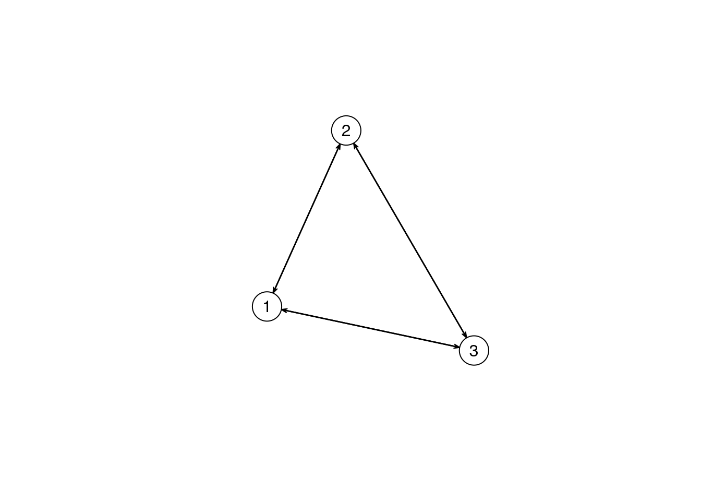
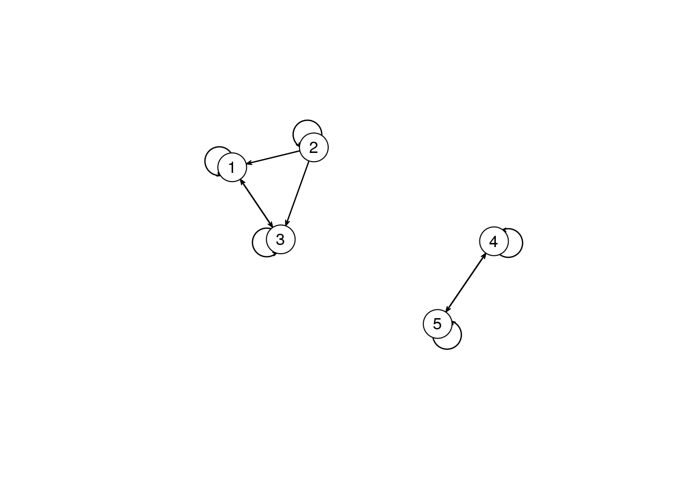
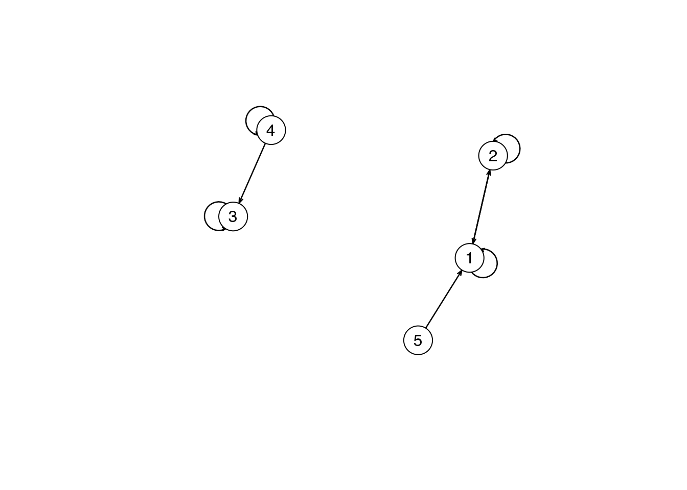
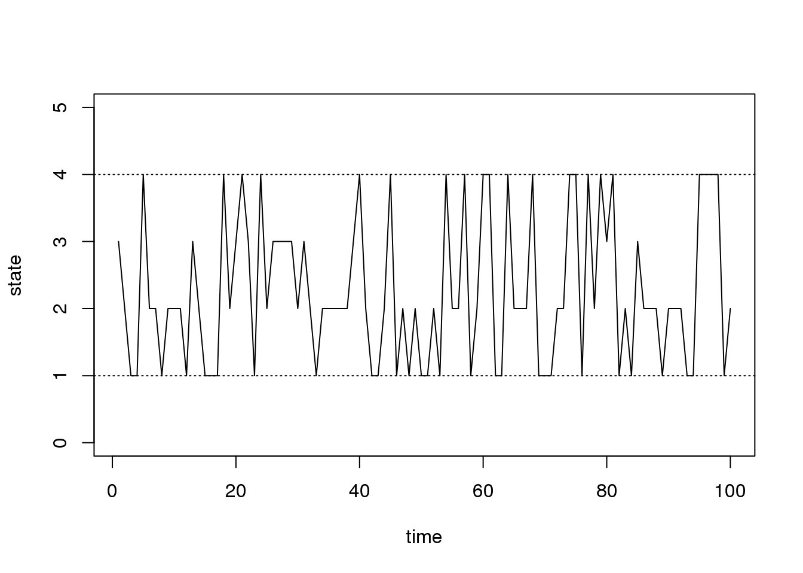

Last updated: 2017-01-24
Code version: 529c99e

This chain is composed of one class and it is recurrent.
This chain is composed of two classes and they are both recurrent.

This chain is composed of three classes: one transient and two recurrent.
 This chain is composed of four classes: two transient and two recurrent.
We can build a matrix based on the information given that indicates the probability of transitioning between a car or truck. We can then use eigendecomposition in order to compute the stationary distribution of this markov chain to determine the fraction of vehicles on the road that are trucks.
The stationary distribution has the property \(\pi^{T} = \pi^{T}P\).
library(MASS)
# define probability transition matrix
m <- matrix(c(1/4, 1/5, 3/4, 4/5), nrow = 2, ncol = 2)
# calculate eigenvalues and eigenvectors
eg <- eigen(m)
rvec <- eg$vectors
lvec <- ginv(eg$vectors)
vals <- eg$values
# this should return the original matrix
rvec %*% diag(vals) %*% ginv(rvec) [,1] [,2]
[1,] 0.25 0.75
[2,] 0.20 0.80# and this should output the stationary distribution
lvec[1, ]/sum(lvec[1, ])[1] 0.2105263 0.7894737Thus we can see that 21% of vehicles on the road are trucks, while 79% are cars.
We can also turn this into a function to use for later:
calc.stat.dist <- function(P) {
# calculate eigenvalues and eigenvectors
eg <- eigen(P)
rvec <- eg$vectors
lvec <- ginv(eg$vectors)
vals <- eg$values
# this should return the original matrix
# stopifnot(rvec%*%diag(vals)%*%ginv(rvec) == P)
# and this should output the stationary distribution
return(lvec[1, ]/sum(lvec[1, ]))
}If we consider four different possibilities that include F:F, F:B, B:F, and B:B in terms of leaving to go on the run and returning we can calculate the probability of running barefoot for small values of k by generating a probability transition matrix anf finding the stationary distribution.
For k = 2:
P <- matrix(c(c(3/4, 1/4, 0), c(1/4, 1/2, 1/4), c(0, 1/4, 3/4)), nrow = 3)
S <- calc.stat.dist(P)
S[1][1] 0.3333333For k = 3:
P <- matrix(c(c(3/4, 1/4, 0, 0), c(1/4, 1/2, 1/4, 0), c(0, 1/4, 1/2, 1/4), c(0,
0, 1/4, 3/4)), nrow = 4)
S <- calc.stat.dist(P)
S[1][1] 0.25For k = 4:
P <- matrix(c(c(3/4, 1/4, 0, 0, 0), c(1/4, 1/2, 1/4, 0, 0), c(0, 1/4, 1/2, 1/4,
0), c(0, 0, 1/4, 1/2, 1/4), c(0, 0, 0, 1/4, 3/4)), nrow = 5)
S <- calc.stat.dist(P)
S[1][1] 0.2So we can see that the probability of running barefoot with K shoes is going to be \(\frac{1}{k+1}\).
A time reversible Markov chain is one where the states are traversered similarly from start to finish as from finish to start. Mathematically we can write this as \(P_{ij} = \frac{\pi_{j}P_{ji}}{\pi_{i}}\). This states that the probability of moving from state \(i\) to state \(j\) is equal to the stationary probability of being in state \(i\), times the probability of moving from state \(j\) to state \(i\), all over the stationary probability of being in state \(j\).
We can check this for all of our transitions:
P <- matrix(c(c(0, 1/2, 1/2), c(1/4, 1/2, 1/4), c(1/4, 1/4, 1/2)), nrow = 3)
S <- calc.stat.dist(P)
(S[1] * P[1, 2])/S[2][1] 0.25P[2, 1][1] 0.5(S[1] * P[1, 3])/S[3][1] 0.25P[3, 1][1] 0.5(S[2] * P[2, 3])/S[3][1] 0.25P[3, 2][1] 0.25Based on these examples, we can see that this markov chain is indeed time reversible.
We’re given the following probability matrix that represents the probability of transitioning between different nucleotides:
P <- matrix(c(0.1, 0.35, 0.3, 0.6, 0.8, 0.1, 0.2, 0.1, 0.05, 0.1, 0.2, 0.25,
0.05, 0.45, 0.3, 0.05), nrow = 4)(a)
The probability of observing “TATA” under this model can be found by calculating the stationary distribution and then multiplying the probabilites of transitioning between states “T”, “A”, “T”, and “A”. \(0.30 \cdot 0.318 \cdot 0.30 \cdot 0.318 =\) 0.001709.
(b)
First let’s define a function to simulate a discrete markov chain:
# simulate discrete Markov chains according to transition matrix P
run.mc.sim <- function(P, num.iters = 50) {
# number of possible states
num.states <- nrow(P)
# stores the states X_t through time
states <- numeric(num.iters)
# initialize variable for first state
states[1] <- 1
for (t in 2:num.iters) {
# probability vector to simulate next state X_{t+1}
p <- P[states[t - 1], ]
## draw from multinomial and determine state
states[t] <- which(rmultinom(1, 1, p) == 1)
}
return(states)
}Now we will simulate this 10,000 times, followed by another 10,000 times where we sample every 100th base:
num.iterations <- 20000
# simulate chains
chain.states <- run.mc.sim(P, num.iters = num.iterations)
chain.states <- chain.states[10001:20000][seq(0, 10000, 100)]matplot(chain.states, type = "l", lty = 1, col = 1:5, ylim = c(0, 5), ylab = "state",
xlab = "time")
abline(h = 1, lty = 3)
abline(h = 4, lty = 3)
We can see in the above plot of every 100th base what the probabilities were. Let’s calculate them individually:
table(chain.states)/100chain.states
1 2 3 4
0.26 0.30 0.12 0.32 And compare those to the stationary distribution calculated using eigendecomposition:
calc.stat.dist(P)[1] 0.3181481+0i 0.3356581-0i 0.1295444+0i 0.2166494+0iThey look pretty similar!
(c)
We can find the expected number of bases before observing “AACC” by simulating the markov chain many times and estimating the expectation.
num.chains <- 10000
num.iterations <- 100
chain.states <- matrix(NA, ncol = num.chains, nrow = num.iterations)
for (c in seq_len(num.chains)) {
chain.states[, c] <- run.mc.sim(P, num.iters = num.iterations)
}We can then search through the various simulations and search for the desired sequences:
library(stringr)
results <- apply(chain.states, 2, function(x) {
str_locate(pattern = "1133", paste(x, collapse = ""))
})
successes <- results[!is.na(results)]
sum(successes)/length(successes)[1] 49.85606Not sure where we were supposed to get the data for this one so I’ll generate it myself?
# simulated binary observations
m <- rbinom(1000, size = 1, prob = 0.3)First we want to fit a Bernoulli model to the data:
l <- function(X, p) {
ns <- sum(X)
return(log(p^(ns) * (1 - p)^(length(X) - ns)))
}
num.steps <- 100
sim.results <- numeric(num.steps)
pvec <- seq(0.01, 1, 0.01)
for (i in seq_len(num.steps)) {
sim.results[i] <- l(m, pvec[i])
}
plot(pvec, sim.results, type = "l")We can see that the likelihood maximizes for 0.3, which is the value of \(p\) used to simulate the data.
We can then use this value of p to create a maximum likelihood estimate for the probability transition matrix, simulate the markov chain, and calculate the likelihood of the states.
P <- matrix(c(c(0.7, 0.3), c(0.7, 0.3)), nrow = 2)
iters <- 1000
states <- run.mc.sim(P, num.iters = iters)
l(states - 1, 0.3)[1] -Inf#' Simulate medical screening
#'
#' Outputs simulated data about protein concentration for diseased and non-diseased individuals
#'
#' @param n number of individuals
#' @param p proportion diseased
#'
#' @return n by 2 matrix where column 1 (x) is protein concentration and column two (z) is disease indicator
#'
#' @example sim.screen(100,0.3)
#'
sim.screen <- function(n, p) {
m <- matrix(0, nrow = n, ncol = 2)
for (i in seq_len(n)) {
z <- rbinom(n = 1, size = 1, prob = p)
ifelse(z == 1, x <- rgamma(n = 1, scale = 1, shape = 2), x <- rgamma(n = 1,
scale = 0.5, shape = 2))
m[i, 1] <- x
m[i, 2] <- z
}
return(m)
}
#' Calculate the likelihood of screening data
#'
#' Outputs the likelihood ratio of normal to diseased models
#'
#' @param m n by 2 medical screen data matrix
#'
#' @return m n by 3 data matrix where the third column are the likelihood ratios
#'
#' @example l.screen(m)
#'
l.screen <- function(m) {
nm <- matrix(0, nrow = nrow(m), ncol = 3)
nm[, 1] <- m[, 1]
nm[, 2] <- m[, 2]
nm[, 3] <- dgamma(m[, 1], scale = 0.5, shape = 2)/dgamma(m[, 1], scale = 1,
shape = 2)
return(nm)
}We can use these functions to find out what value of c is most appropriate to classify a patient as diseased or not diseased
m <- sim.screen(1000, 0.2)
m <- l.screen(m)
cvec <- seq(0.1, 10, length = 100)
misclass <- sapply(cvec, function(c) {
# how often is the classification incorrect?
sum(m[, 2] == as.numeric(m[, 3] > c))/nrow(m)
})
theo.misclass <- sapply(cvec, function(c) {
0.2 * c/((0.8) + 0.2 * c)
})
plot(log10(cvec), misclass, xlab = "Misclassifications", ylab = "Log10(c)",
ylim = c(0, 1))
points(log10(cvec), theo.misclass, col = "red")We can redo this simulation for a lower proportion of diseased individuals as well:
m <- sim.screen(1000, 0.02)
m <- l.screen(m)
cvec <- seq(0.1, 10, length = 100)
misclass <- sapply(cvec, function(c) {
# how often is the classification incorrect?
sum(m[, 2] == as.numeric(m[, 3] > c))/nrow(m)
})
theo.misclass <- sapply(cvec, function(c) {
0.02 * c/((0.98) + 0.02 * c)
})
plot(log10(cvec), misclass, xlab = "Misclassifications", ylab = "Log10(c)",
ylim = c(0, 1))
points(log10(cvec), theo.misclass, col = "red")We can first show that the Gamma distribution is the conjugate prior for the Poisson likelihood:
\[ P(\vec{X}|\lambda)P(\lambda) \propto P(\lambda|\vec{X}) \\ P(\vec{X}|\lambda) = \frac{e^{-n\lambda} \lambda^{\sum x_{i}}}{\prod_{i=1}^{n}x_{i}} \\ P(\lambda) = \frac{\beta^{\alpha}}{\Gamma(\alpha)}\lambda^{\alpha-1}e^{-\lambda \beta} \\ P(\lambda|\vec{X}) \propto \lambda^{\sum x_{i} + \alpha - 1}e^{-(n + \beta)\lambda} \]
From this we can see that \(P(\lambda|\vec{X})\) ~ \(Gamma(\sum x_{i} + \alpha, n + \beta)\).
If we no consider that prior our prior parameters and data are \(\alpha=\beta=1\) and \(\vec{X} = [0,2,1,4,2,0,0,2]\), then we get the following:
\[ p(\lambda|\vec{X}) \propto \lambda^{10+\alpha}e^{-(8+\beta)\lambda} \] Which is distributed as a \(Gamma(11,9)\) distribution. To find the 90% credible interval we want to know where \(P(a < \lambda < b) = 0.9\). We can do this by applying a transformation to the Gamma distributed random variable \(\lambda\).
If \(\lambda\) ~ \(Gamma(\alpha, \beta)\), then \(\frac{2\lambda}{\alpha}\) ~ \(\chi^{2}(2\beta)\). Now our probability statement reads \(P(\frac{2a}{11} < Z < \frac{2b}{11}) = 0.9\). Using a standard chi-squared table for \(Z = \chi^{2}(18)\), we can find that \(a =\) 101.7115 and \(b =\) 240.7515.
sessionInfo()R version 3.3.2 (2016-10-31)
Platform: x86_64-apple-darwin15.6.0 (64-bit)
Running under: OS X El Capitan 10.11.6
locale:
[1] en_US.UTF-8/en_US.UTF-8/en_US.UTF-8/C/en_US.UTF-8/en_US.UTF-8
attached base packages:
[1] stats graphics grDevices utils datasets methods base
other attached packages:
[1] stringr_1.1.0 MASS_7.3-45 statnet_2016.9
[4] sna_2.4 ergm.count_3.2.2 tergm_3.4.0
[7] networkDynamic_0.9.0 ergm_3.6.1 network_1.13.0
[10] statnet.common_3.3.0
loaded via a namespace (and not attached):
[1] Rcpp_0.12.4 workflowr_0.3.0 knitr_1.15.1
[4] magrittr_1.5 lattice_0.20-34 tools_3.3.2
[7] parallel_3.3.2 grid_3.3.2 nlme_3.1-128
[10] lpSolve_5.6.13 coda_0.19-1 git2r_0.18.0
[13] htmltools_0.3.5 yaml_2.1.14 rprojroot_1.2
[16] digest_0.6.9 Matrix_1.2-7.1 formatR_1.4
[19] trust_0.1-7 robustbase_0.92-7 evaluate_0.10
[22] rmarkdown_1.3 stringi_1.1.2 DEoptimR_1.0-8
[25] backports_1.0.5 This site was created with R Markdown